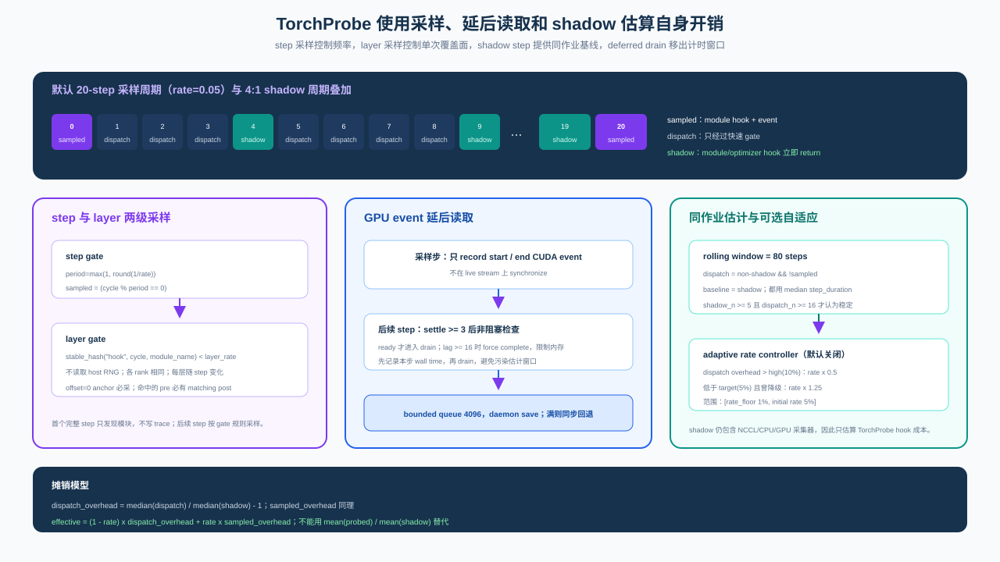
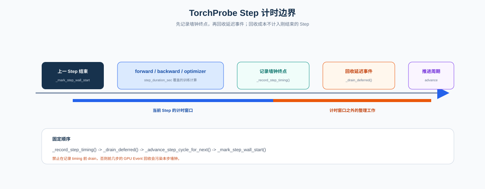

Overhead Control and Measurement Architecture¶
Instrumentation overhead is not one counter for time spent inside a collector. Hook dispatch, sampled-step work, GPU timing reads, MEMT writes, and NCCL callbacks cross different execution boundaries. Combining them into one percentage cannot guide sampling or locate a regression. Probing first isolates cost architecturally, then defines what each measurement can explain.
See Profiling architecture for implementation and SQL tables — torch_step_timing for the data contract.
1. How cost is decomposed¶
Each TorchProbe optimizer step first enters either the probed or shadow path. A shadow step retains the complete training workload and all other collectors, but TorchProbe module and optimizer hooks return at entry. It is an interleaved baseline in the same job, not "pure training with no observation."
A probed step then follows one of two paths. An unsampled step pays only hook dispatch and step timing. A sampled step also records module events, prepares results, and writes tables. The first is a fixed cost that long-running observation may pay every step; the second is an occasional heavy cost amortized by the sample rate. They must remain separate because lowering the rate reduces the heavy path but cannot remove dispatch through hooks already attached to the model tree.
In-run shadow isolates TorchProbe only. Standalone instrumentation benchmarks measure Span/MEMT components, and paired end-to-end training benchmarks check their composition. The NCCL profiler has no in-run shadow because disabling NCCL callbacks would change the communication path being measured; it requires an offline A/B over the same collectives.
2. Why the control path is organized this way¶

Step and layer gates control different dimensions: how often to inspect deeply and how much of one
inspection to cover. The step gate depends only on step number, so ranks select the same steps. The
layer gate hashes (step, layer) deterministically, reducing coverage while preserving cross-rank
comparability. The default rate=0.05, layer_rate=1.0 keeps complete module relationships for a
small set of steps instead of producing unrelated fragments on every step.
GPU event recording and reading are separated. A sampled step submits events; elapsed time is read after a settle window. The default asynchronous worker uses a bounded queue of 4096 items. A full queue falls back to synchronous save rather than growing memory without bound, and process exit flushes it. This makes the resource bound and the no-silent-loss behavior explicit.
Shadow steps are interleaved at 4:1 by default so probed and baseline paths experience similar
data, collective, and system noise. Adaptive sampling is off by default. When enabled, it may act
only after shadow_n ≥ 5 and dispatch_n ≥ 16, and it may never raise the rate above the user's
initial value. The controller can reduce cost when evidence is sufficient; it cannot autonomously
increase observation intensity.
3. Timing boundaries and statistical semantics¶

step_duration_sec starts at _mark_step_wall_start() at the end of the previous optimizer
post_step_hook and ends at _record_step_timing() in the current one. Only then does
_drain_deferred() run, followed by state advance and the next start marker. The current step thus
contains its training work and hook teardown but is not charged for GPU-event recovery from earlier
steps.
The train.step span measures the user-wrapped compute interval and excludes hook dispatch and
persistence. step_duration_sec intentionally includes those boundary costs. The two metrics
answer different questions and cannot be subtracted or substituted for one another.
Runtime aggregation uses medians to resist data-loading, collective, and scheduling spikes. Let $M_s$ be median shadow duration, $M_d$ median unsampled probed duration, and $M_p$ median sampled probed duration:
$$ \text{dispatch} = \left(\frac{M_d}{M_s}-1\right)\times100\%, \qquad \text{sampled} = \left(\frac{M_p}{M_s}-1\right)\times100\% $$
For sample rate $r$, amortized effective overhead is:
$$ \text{effective}=(1-r)\times\text{dispatch}+r\times\text{sampled} $$
This must not become mean(probed)/mean(shadow): the probed set mixes light and heavy paths, while
the smaller shadow set is sensitive to long-tail steps. Historical hook_tax uses all probed-step
medians and remains only for compatibility and as a conservative upper bound.
4. When the measurement is trustworthy¶
The Web UI and diagnostic skills use the latest 80 steps, covering several shadow cycles without
retaining distant cold-start noise. With shadow_n < 5 or dispatch_n < 16, the result remains a
collecting or low-confidence estimate and cannot trigger a stable alert. With shadow=off, the
denominator does not exist and in-run overhead percentage is undefined. Absolute values below
0.5% render as ≈0% rather than turning timer resolution and natural jitter into false precision.
Noise is handled by source separation. Sampled heavy steps do not enter dispatch; rolling medians suppress step spikes; discovery, JIT, and cache warmup stay outside the stable window; deferred drain occurs after timing; and each rank computes its stratified metrics before cross-rank comparison rather than mixing different workloads into one mean.
nccl.profiler_counters, queue saturation, and write failures describe evidence integrity, not an
overhead percentage. When events are absent, a diagnosis must exclude a collection gap before
claiming there was no additional cost.
5. Why offline validation remains necessary¶
In-run measurement matches production workload but sees only TorchProbe relative to shadow. The offline benchmark therefore has three layers: tracing isolates span-stack and persistence cost; synthetic TorchProbe validates hook and sampling state transitions; TinyNet uses back-to-back paired deltas to validate real forward/backward/optimizer composition. These are not three product metrics, but a chain of evidence that narrows a regression from end to end toward a component.
NCCL follows a separate chain. Baseline and profiled runs use the same message size, warmup, and synchronization boundary and compare collective latency and throughput. Criterion measures only callback, slot-pool, and clock-read components and cannot replace collective E2E results.
The repository's 5% diagnostic warning, 75% soak bound, and component ratio gates serve different layers. They are not one performance SLO and do not replace release calibration on the target model and hardware.
6. Invariants for changes¶
This table is a change-safety contract, not a second overhead model.
| Invariant | Required behavior | Guard |
|---|---|---|
| Primary percentage | median dispatch/shadow ratio; never mean(probed)/mean(shadow) |
web/src/overhead/metrics.rs |
| Amortized overhead | (1-rate)×dispatch + rate×sampled |
amortized_blends_dispatch_and_sampled_by_rate |
| Hook order | _record_step_timing() → _drain_deferred() → advance → _mark_step_wall_start() |
Python overhead/sampling regression tests |
| Async drain | PROBING_TORCH_DEFER_ASYNC=1 default; bounded queue, sync fallback, exit flush |
test_deferred_drain_worker.py |
| Stability | stable only when shadow_n ≥ 5 and dispatch_n ≥ 16 |
Web metrics and health_overview |
| UI meaning | Typical=dispatch; Effective=rate-weighted; abs(pct)<0.5% renders ≈0% |
Web formatting/copy tests |
After changing formulas, hook order, or async-drain defaults, run:
cd web && cargo test overhead
PROBING=0 pytest tests/regression/profiling/test_overhead_invariants.py \
tests/regression/profiling/test_torch_probe_sampling.py \
tests/regression/profiling/test_deferred_drain_worker.py -q